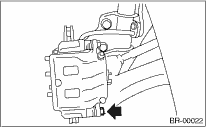
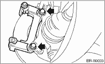

CAUTION:
Do not let brake fluid come into contact with the painted surface of the vehicle body. Completely wash away with water immediately and wipe off if it was accidental.
1. Set the vehicle on a lift.
2. Loosen the wheel nuts.
3. Lift-up the vehicle, and remove the front wheels.
4. Remove the union bolt, and disconnect the brake hose from the caliper body assembly.

5. Remove the bolt securing lock pin (yellow) to caliper body assembly.

6. Raise the caliper body assembly, and then move it toward vehicle center to separate it from the support.
7. Remove the support from housing.
NOTE:
Remove the support only when replacing the rotor or support. It need not be removed when servicing the caliper body assembly.

8. Remove mud and foreign matter from the caliper body assembly and the support.